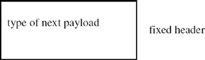
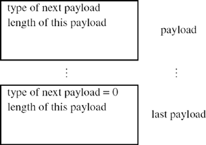
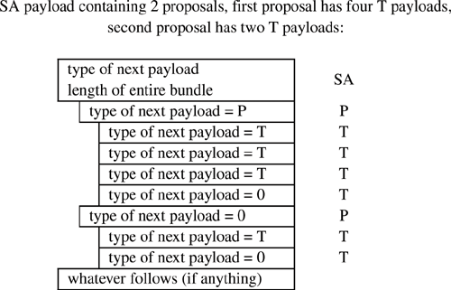

Networking Security Networking Security Networking Security Security Networking Security Networking Security Networking Charlie Kaufman Radia Perlman Mike Speciner Prentice Hall Network Security: Private Communication in a Public World, Second Edition
18.7. ISAKMP/IKE Encoding
In this section we describe the formats, together with our rants about the idiosyncracies. The distinction between ISAKMP and IKE is fuzzy, and definitions are spread among all three documents (RFCs 2407, 2408, and 2409).
Messages have a fixed header, and then a sequence of what ISAKMP refers to as payloads. Similar in spirit to IPv6 extension headers, each payload starts with TYPE OF NEXT PAYLOAD and LENGTH OF THIS PAYLOAD.


The payload types are:
0 = end (i.e., no next payload) 1 = SA (security association): contains DOI and "situation", a modifier of DOI, and must include payloads 2 and 3 2 = P (proposal): proposed SPI, or SPI in reverse direction 3 = T (transform): cryptographic choices 4 = KE (key exchange):, the Diffie-Hellman value 5 = ID (endpoint identifier in phase 1, traffic selector in phase 2) 6 = CERT (certificate) 7 = CR (certificate request) (can include the name of the certifier from whom you'd like a certificate) 8 = hash (some sort of checksum) 9 = signature 10 = nonce 11 = notification 12 = delete (subtype of notification, meaning you are closing this SPI) 13 = vendor ID (can be thrown in to show what implementation you're using). To avoid dealing with a registry of vendor IDs, and allowing the field to be fixed size, this is an MD of some sort of string guaranteed to uniquely describe the vendor, such as its name and telephone number. 14Â127 reserved for future use 128Â255 = private use (i.e., so NSA can use it and not publish what they're using it for)
18.7.1. Fixed Header
All messages start with a 28-octet fixed length header.
# octets | | | 8 | initiator's cookie | | 8 | responder's cookie | | 1 | next payload | | 1 | version number (major/minor) | | 1 | exchange type | | 1 | flags | | 4 | message ID | | 4 | message length (in units of octets) | (after encryption) |
The fields are:
initiator's cookie (8 octets) responder's cookie (8 octets). Note this will =0 in the first message, since it is unknown at that point next payload type version (1 octet). This is worth ranting about. The version number field is divided into two 4-bit fields. The intention is that the top nibble is the major version number and the bottom nibble is the minor version number. We think the concept of split version number fields of this sort originated in the early 1980's with DECnet routing, and the intention of the split version number was that the major version would be incremented for incompatible changes, and the minor version would be incremented for compatible changes. A compatible change, at least for routing, might be something like the ability to treat high priority traffic preferentially. Since differences in the minor version wouldn't create incompatibilities, the minor version field served more as information to the higher version node than as anything to worry about if the versions were different. So two nodes would talk if they both supported the same major version number. But ISAKMP has all the complexity of a split version field without any actual advantages over a simple, single version number field. In ISAKMP you are required to reject the connection if the other guy's version field is larger than yours. (Actually, it says you must reject it if the major version is larger than yours, or if the major version is the same as yours, if the minor version is larger...which works out to the same thing as "reject if the other guy's 8-bit number is larger than yours.") So the result is exactly the same as if it was just an 8-bit field, but it's more complicated to understand and will run out of numbers more quickly than an 8-bit field since there are only 16 major version numbers. Unless someone worries about numbers getting used up and mandates that you must use up all the minor version numbers before you're allowed to bump the major version number. Anyway, ISAKMP gives no insight into what the designers were trying to accomplish by splitting the field into major and minor. The first version of ISAKMP was major=0, minor=1. The current version (as of writing this book) is major=1, minor=0. Also, ISAKMP doesn't exactly say you reject it if the version is larger than yours. It says you SHOULD reject it. So implementations are free to ignore the version number, but perhaps feel a little guilty about it. exchange type (1 octet). The values defined are: 1 = base. An exchange type defined by ISAKMP but not used by IKE. This adds an extra message to aggressive mode, so that Alice (the initiator) can send her proposed parameters before sending her Diffie-Hellman value, so that the Diffie-Hellman group could also be negotiated. 2 = identity protection. This is what is called "main mode" in IKE. 3 = authentication only. Not used by IKE. 4 = aggressive. Same as what's called "aggressive mode" in IKE. 5 = informational. Not really an "exchange", since it's a single message without an acknowledgment, used to tell the other side something such as that you are refusing the connection because you don't like the version number. 6Â31 = reserved values by ISAKMP for assignment by IANA as new ISAKMP exchange types 32Â239 = to be defined within a particular DOI 240Â255 = for private use
flags: bit 0 (LSB): encryptedÂwhether the fields after the header are encrypted bit 1: commitÂA flag so badly named, and so confusingly defined in ISAKMP, that IKE wound up using the same bit and the same name for almost the opposite purpose. In ISAKMP the intention seems to be that the sender, say Bob, is saying he's not yet ready to accept messages on this SA, so Alice should wait for Bob to send an "I'm ready" message. IKE interpreted it as a request by Bob for Alice to acknowledge this message. So ISAKMP uses it for Bob to tell Alice to wait for Bob's ack, and IKE uses it for Bob to tell Alice to send an ack. bit 2: authentication onlyÂthis means that the fields after the header are not encrypted. This bit gives no additional information over merely not setting the "encrypted" flag. And you'd probably think that this bit would always be set to the opposite of the encrypted flag, but if it had been defined that way surely someone would have noticed this flag as being useless. Instead, this flag is only set during phase 2, when the assumption is all messages are encrypted, to note a message that isn't encrypted. The only such message would be an informational message. message ID: this is used in phase 2 in order to tie together related packets. In other words, if lots of phase 2 SAs are being negotiated simultaneously within the same phase 1 SA, this field differentiates the messages for the different SAs. The specification says that these values must be chosen randomly so that there probably won't accidentally be two phase 2 exchanges with the same message ID (see §18.5.7 Message IDs). message length: Length of entire message, in units of octets.
18.7.2. Payload Portion of ISAKMP Messages
After the fixed header comes a set of ISAKMP "payloads", reminiscent of IPv6 "next headers". Each one starts with four octets consisting of:.
# octets | | 1 | type of next payload | 1 | reserved (unused, set to zero) | 2 | length of this payload |
The encoding would be more intuitive to have each payload indicate the type of that payload rather than the following one, but this way works too. It's this way because it looks more like IPv6.
18.7.3. SA Payload
Assembly of SA payload requires great peace of mind.
ÂParaphrase of Robert Pirsig, from Zen and the Art of Motorcycle Maintenance
The SA payload for IKE includes the P (proposal) and T (transform) payloads. The encoding is extremely confusing for no good reason. The SA, P and T each look like independent payloads, but ISAKMP defines Ts as being carried inside a P, and Ps carried inside an SA payload. For example, if you have an SA payload that includes 2 proposals, the first of which includes 4 transforms, and the second of which includes 2 transforms, you'd have the payloads SA, P, T, T, T, T, P, T, T.
18.7.3.1. Ps and Ts within the SA Payload
The P payload indicates what "protocol" you're trying to negotiate, e.g., phase 1 IKE, ESP, AH, or IP compression. For phase 1 IKE, there would only be a single P within an SA, because you're only trying to negotiate phase 1 IKE. For phase 2 IKE, there might be several Ps within an SA, because you might be making a proposal for AH only, ESP only, AH+ESP, or any of those plus IP compression.
Within a P there are a set of T payloads. Each T payload indicates a complete suite of cryptographic algorithms needed by that P. For instance, for Phase 1 IKE, you need 4 (authentication (integrity protection), hash, encryption, and Diffie-Hellman group), and optionally a lifetime. There is a default lifetime of 8 hours, so if no lifetime appears within a T, it is the same as including it explicitly with 8 hours. For an AH proposal, there's only an authentication (integrity protection) algorithm, and optionally a lifetime.
Each P payload is assigned a number by the initiator. If there are two P payloads with the same number, it implies both payloads constitute a single proposal. For instance, if Alice would like to have the SA do both ESP and AH, she would include two P payloads, both with the same proposal number, and if Bob accepts that proposal number, he is accepting an SA that will do both ESP and AH. Of the P numbers offered by Alice, Bob chooses one or refuses them all.
Each T payload also includes a number. For instance, suppose a P payload has been assigned the number 3, and has associated T payloads for that P numbered 1, 2, 3. The other side might accept proposal #3, transform suite #2.
18.7.3.2. Payload Length in SA, P, and T Payloads
The PAYLOAD LENGTH in the SA payload is the length of the entire set of the payloads consisting of the SA and all Ps and Ts associated with that SA. The payload length of each P is the length of that P payload plus the T payloads that follow. The payload length of each T payload is actually the length of that T payload.
18.7.3.3. Type of Next Payload
The TYPE OF NEXT PAYLOAD field in the SA payload is set to whatever follows the SA and all proposals, usually 0 (nothing) for main mode phase 1 IKE, or 4 (KE payload) for aggressive mode phase 1 IKE, or 10 (nonce) for phase 2 IKE. The TYPE OF NEXT PAYLOAD field in the P payload is either P or 0 (if it is the last proposal within an SA group). The NEXT PAYLOAD in a T payload is either T or 0 (if it's the last transform within a P group).

18.7.3.4. SA Payload Fields
# octets | | | 1 | type of next payload | | 1 | reserved (unused, set to zero) | | 2 | length of this payload | | 4 | DOI | 1 for IPsec | | | situation | | | | P payload | | | | T payload | | | | T payload | | | | T payload | | | | P payload | | | | T payload | |
In the diagram we assume the SA payload contains two proposals, with the first containing three transforms and the second containing one transform.
type of next payload, length of this payload (explained in §18.7.3 SA Payload) DOI (domain of interpretation). The idea of this field is so that all parameters do not need to be centrally defined and given numbers. Instead, if someone wants to define their own protocols with ISAKMP, they only need a single number assigned, a DOI value, and then all other parameters are interpreted according to that DOI. If you don't know about that DOI value you can't interpret the SA payload. In IKE the DOI=1. situation: In ISAKMP the situation field is variable length, and its length and definition depend on the DOI. In IKE the situation field is defined in RFC 2407 as a 4 octet bit mask, of which 3 bits have been assigned. These bits don't really make much sense. They were put there because the military types wanted them and they probably won't be used for anything. least significant bit (0x01): identity only. As described in RFC 2407 this bit indicates whether there will be an identity payload during the exchange. But you don't need a bit to tell you that. Just parse the message! Apparently someone thought it was a good idea, but nobody on the mailing list seems to remember what they wanted it for. next bit (0x02): secrecy. This means that the initiator requires military-style labels, and if this bit is set, the situation field is followed by variable-length data that specifies a sensitivity level and a compartment bitmask. next bit (0x04): integrity. This means that the initiator requires military-style labels for integrity, and if this bit is set, the situation field is followed by a military-style (sensitivity level, compartment) bitmask. If both the secrecy and integrity bits are set, then the integrity label follows the secrecy label.
P and T payloads (nested as described in §18.7.3.1 Ps and Ts within the SA Payload)
18.7.4. P Payload
As explained before, this is not a free-standing payload, but is always nested inside the SA payload.
# octets | | 1 | type of next payload | 1 | reserved (unused, set to zero) | 2 | payload length (length includes nested Ts) | 1 | proposal number | 1 | protocol ID | 1 | SPI size | 1 | # of T payloads nested within this P | variable | SPI |
proposal number: the nickname given to this proposal so that the responder can accept this proposal by using that assigned number protocol ID: the protocol being proposed (e.g., phase 1 IKE=0, ESP=3, AH=2, IPcomp=4) SPI size: the size of the SPI that will be the ID of the SA this protocol is attempting to negotiate. In the case of phase 1 IKE, the SPI is the (initiator cookie, responder cookie) pair. The ISAKMP spec says in that case the SPI size can be anything, and the initiator is welcome to put whatever it wants into there, but the responder must ignore it. In the case of phase 2 IKE, the SPI is 4 octets, so the SPI size field is set to 4. # of T payloads nested within this P: self-explanatory SPI: The actual value of the SPI
18.7.5. T Payload
As explained before, this is not a free-standing payload, but is always nested inside a P, nested inside the SA payload..
# octets | | 1 | type of next payload | 1 | reserved (unused, set to zero) | 2 | length of this payload | 1 | transform number | 1 | transform ID | 2 | reserved | variable | attributes |
transform number: the nickname given to this transform so that the responder can accept this transform by using that assigned number transform ID: defined within the DOI and within the protocol (and the values are in RFC 2407). For instance, AH has values defined for MD5, SHA, and DES (CBC residue). ESP has a bunch of values defined for various encryption algorithms such as DES, 3DES, RC5, IDEA, and of course null. attributes: a sequence of variable-length fields. Each one consists of:. # octets | | 2 | AFflag | attribute type | 2 | attribute length (if AF=0), attribute value (if AF=1) | variable | attribute value (if AF=1) |
AF flag (attribute format flag)=0 means the value of this attribute fits within 2 octets. AF=1 means the value of this attribute takes more than 2 octets, so instead of putting the attribute value into the following 2 octets, the length is put there instead, and the variable length value follows.
18.7.6. KE Payload
# octets | | 1 | type of next payload | 1 | reserved (unused, set to zero) | 2 | length of this payload | variable | key data |
the first 3 fields are the same as in all the other payloads key data can be thought of as the transmitter's Diffie-Hellman number, though in theory some exchange other than Diffie-Hellman might have been negotiated. Its length depends on the chosen crypto suite.
18.7.7. ID Payload
The ID payload has different purposes in phase 1 and phase 2. In Phase 1 it is the name by which each side is known to the other, so that that identity can be authenticated. In phase 2 it is a description of the traffic to be transmitted on the SA (such as IP address ranges). Also, in phase 1, there is only one ID payload, which is the name of the transmitter. In phase 2 there are two ID payloads, one specifying a description of the sources of packets to be forwarded across the SA, and one specifying a description of the destinations of packets to be forwarded across the SA.
# octets | | 1 | type of next payload | 1 | reserved (unused, set to zero) | 2 | length of this payload | 1 | ID type | 1 | protocol ID | 2 | port | variable | Identification Data |
the first 3 fields are the same as in all the other payloads ID type: several are defined in RFC 2407, such as IPv4 address, IPv4 address range (IPv4 address, mask), IPv6 address, IPv6 address range (IPv6 address, mask), domain name (e.g., prenhall.com), user name (e.g., radia@alum.mit.edu), X.500 name.
18.7.8. Cert Payload
# octets | | 1 | type of next payload | 1 | reserved (unused, set to zero) | 2 | length of this payload | 1 | certificate encoding | variable | certificate |
first 3 fields, same as other payloads certificate encoding: a few are defined in ISAKMP, such as X.509 certificate for a signature key, X.509 certificate for a public key with usage key exchange, PGP certificate, Kerberos token certificate, the certificate, variable length
18.7.9. Certificate Request Payload
The certificate request payload contains:.
# octets | | 1 | type of next payload | 1 | reserved (unused, set to zero) | 2 | length of this payload | 1 | certificate type | variable | certificate authority |
first 3 fields, same as other payloads certificate type: same as "certificate encoding" defined in Certificate Payload certificate authority: depends on certificate type, but for X.509 it would be the name of the issuer or trust anchor. This is intended to help the other side know which certificate to send.
18.7.10. Hash/Signature/Nonce Payloads
These are all so straightforward and similar that to save space we're putting them in the same section. They all consist of the standard first 3 payload fields, followed by the hash or signature or nonce (depending on the payload type).
# octets | | 1 | type of next payload | 1 | reserved (unused, set to zero) | 2 | length of this payload | variable | hash or signature or nonce |
18.7.11. Notify Payload
This can be used to inform the other side of error conditions, or anything else that someone might think of in the future. ISAKMP defines a lot of the notify messages, and leaves some values reserved "for private use" or "DOI specific". You might think that ISAKMP would not need to reserve values for DOI-specific. If the DOI in the notify payload indicates 0 (meaning ISAKMP), you'd go to the ISAKMP document to find the definition of that notify type. If the DOI is something else, you'd go to the spec defining those DOI-specific values.
However, ISAKMP's assumption is that if ISAKMP defines a value, the ISAKMP definition applies, regardless of the DOI. But for all DOIs other than ISAKMP, they would assign values from the same space as all non-ISAKMP DOIs and the definitions in their specification would apply.
# octets | | 1 | type of next payload | 1 | reserved (unused, set to zero) | 2 | length of this payload | 4 | DOI | 1 | protocol ID | 1 | SPI size | 2 | notify message type | variable | SPI | variable | notification data |
first 3 fields, as in other payloads DOI, the DOI under which the rest of the payload should be interpreted protocol ID, (e.g., AH, ESP) SPI size: size of the SPI. notify message type: something like "error: authentication failed" SPI notification data: whatever extra data might be associated with that notify message type.
18.7.12. Vendor ID Payload
This is defined in ISAKMP. It's intended to allow you to announce what vendor-proprietary extensions you support. The vendor ID is supposed to be a hash of a string such as "Example Company IPsec version 97.1", so that it is highly likely to be unique. It is OK to include multiple vendor ID payloads, to alert the other side that you support the proprietary extensions of all those vendors.
# octets | | 1 | type of next payload | 1 | reserved (unused, set to zero) | 2 | length of this payload | variable | vendor ID |
|